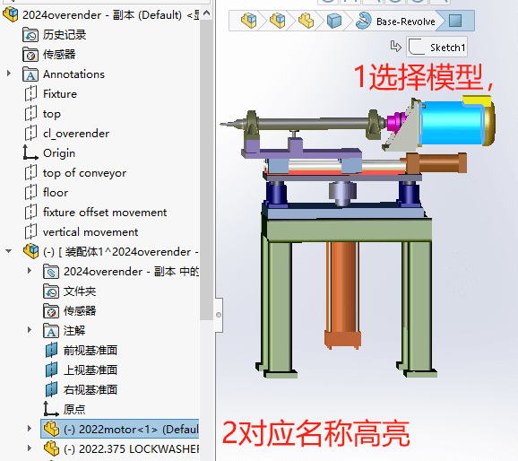

零部件高亮显示跳转
在打开大型装配体模型时，应数量比较多导致我们在寻找零件时会比较麻烦。因此，本文章将给大家介绍几种快速查找定位零件的方法。
1选择模型高亮名称
默认情况下在选择零件模型时，对应的设计树名称也会高亮。
但是有时我们的零部件如果在子装配体内的话，选择模型却不会跳转到对应零件进行高亮显示。则需要去检查【系统选项-featuremanage-滚动显示所选项目】是否勾选。

如果还是没有高亮跳转，那你所选的特征对象可能在设计树是被隐藏的，可以右键总装【树显示-显示特征】。

2通过名称查找模型
选择设计树内模型的名称时，模型默认会高亮显示，但是有些零件可能位于装配体内部因被遮挡导致看不到（判断不了位置）。
可以用【系统选项-显示-图形视区中动态高亮显示】和【FeatureManager-动态高亮显示】，这个模型需要排除在“大型装配体设置”模式下使用。


演示效果：